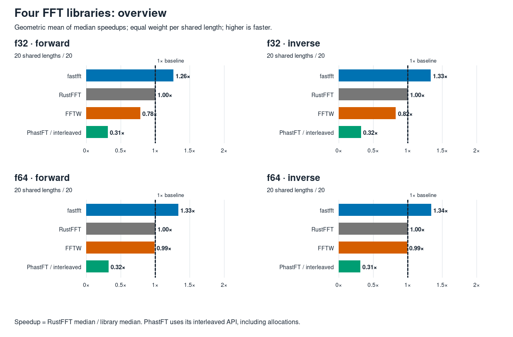
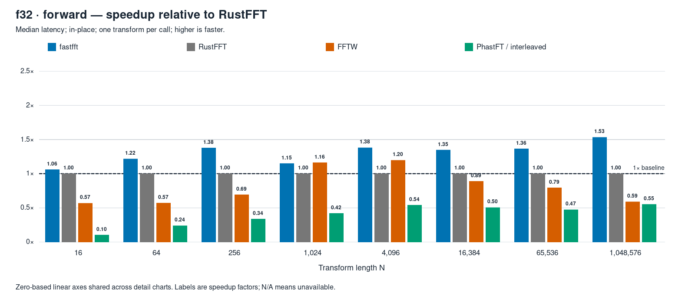
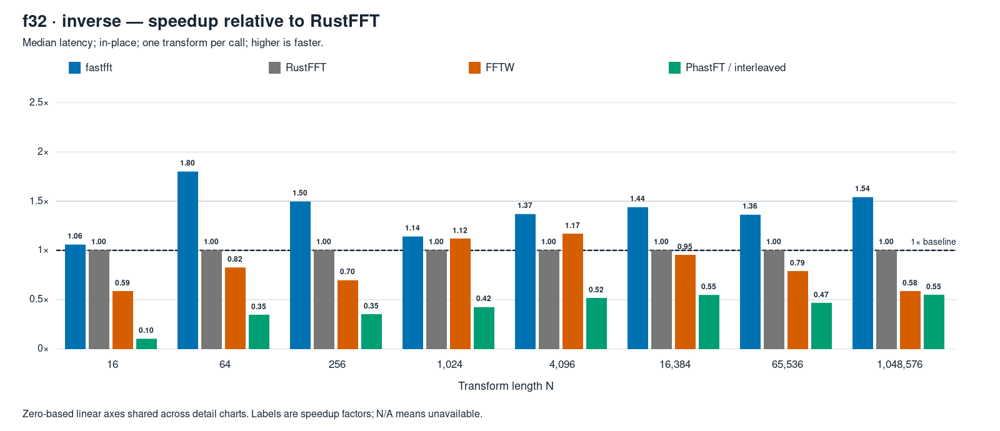
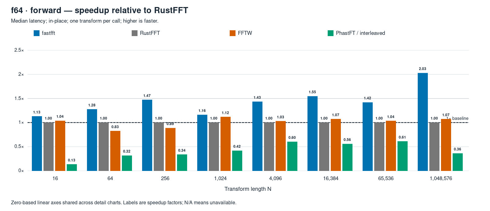
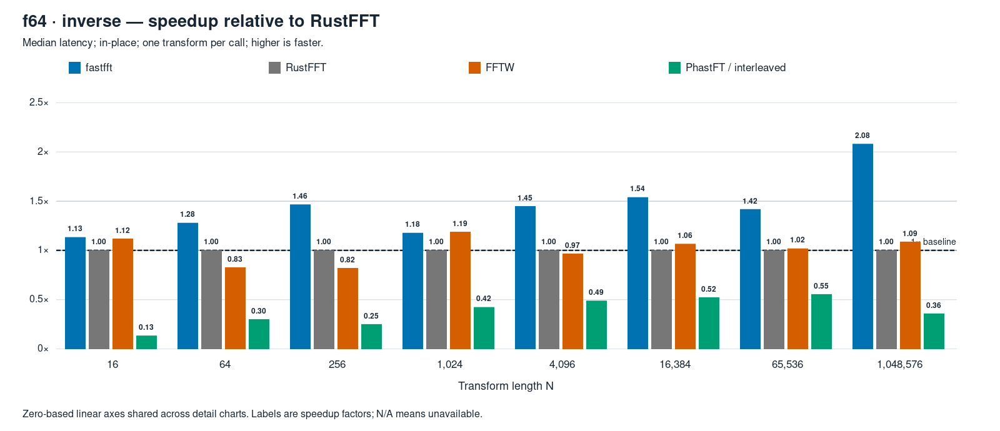

2026-10-16 · mini-ryzen · AMD Ryzen 7 7840HS
Four FFT libraries.
One pinned core.
fastfft’s geometric-mean median speedup is 1.26×–1.34× relative to RustFFT across these four groups.
Forward + inverse · f32 + f64 · N = 2 through 1,048,576 · in-place · one transform per call
The shared-cell overview
320/320 verified and timedSpeedup = RustFFT median ÷ library median. Above 1× is faster. Each bar is a geometric mean with equal weight per length, using only cells shared by all four libraries.
Scroll the charts horizontally, or open the full-size image.



| Library | f32 forward | f32 inverse | f64 forward | f64 inverse |
|---|---|---|---|---|
| fastfft | 1.260× | 1.330× | 1.332× | 1.337× |
| RustFFT | 1.000× | 1.000× | 1.000× | 1.000× |
| FFTW | 0.782× | 0.823× | 0.987× | 0.988× |
| PhastFT / interleaved | 0.310× | 0.320× | 0.320× | 0.310× |
Explore a transform group
Eight charted lengths · every length in the tablesChoose a precision and direction. All detail charts use the same zero-based linear scale.
f32 forward
20 shared lengths / 20


Absolute median latencies · all 20 lengths
Nanoseconds per transform. N/A marks an unavailable measurement.
| N | fastfft | RustFFT | FFTW | PhastFT interleaved |
|---|---|---|---|---|
| 2 | 2.614 | 2.906 | 3.686 | 35.364 |
| 4 | 3.597 | 4.287 | 4.662 | 44.676 |
| 8 | 7.162 | 7.890 | 7.854 | 58.575 |
| 16 | 8.343 | 8.844 | 15.567 | 85.204 |
| 32 | 11.919 | 12.736 | 28.807 | 113.450 |
| 64 | 17.759 | 21.609 | 37.878 | 90.416 |
| 128 | 37.549 | 47.394 | 61.150 | 157.093 |
| 256 | 75.521 | 104.028 | 150.319 | 308.490 |
| 512 | 229.834 | 252.133 | 250.370 | 683.653 |
| 1,024 | 508.628 | 585.036 | 503.274 | 1,394.861 |
| 2,048 | 1,102.089 | 1,317.763 | 1,200.829 | 2,941.412 |
| 4,096 | 2,428.429 | 3,353.188 | 2,800.833 | 6,214.000 |
| 8,192 | 5,347.100 | 7,211.250 | 8,736.500 | 12,974.500 |
| 16,384 | 11,570.000 | 15,597.000 | 17,560.000 | 30,898.500 |
| 32,768 | 23,802.000 | 37,741.500 | 38,032.000 | 73,740.000 |
| 65,536 | 59,032.000 | 80,532.000 | 101,372.000 | 170,136.500 |
| 131,072 | 129,635.000 | 179,129.000 | 219,745.500 | 312,291.000 |
| 262,144 | 313,413.000 | 402,772.000 | 534,666.000 | 717,317.000 |
| 524,288 | 684,325.000 | 898,164.000 | 2,237,392.000 | 1,787,792.000 |
| 1,048,576 | 1,896,047.000 | 2,907,500.000 | 4,937,470.000 | 5,273,265.000 |
f32 inverse
20 shared lengths / 20


Absolute median latencies · all 20 lengths
Nanoseconds per transform. N/A marks an unavailable measurement.
| N | fastfft | RustFFT | FFTW | PhastFT interleaved |
|---|---|---|---|---|
| 2 | 2.613 | 2.901 | 3.679 | 36.834 |
| 4 | 3.595 | 4.256 | 4.659 | 46.171 |
| 8 | 7.169 | 7.891 | 7.858 | 60.670 |
| 16 | 8.363 | 8.846 | 15.099 | 88.140 |
| 32 | 11.827 | 12.780 | 28.156 | 117.790 |
| 64 | 17.930 | 32.268 | 39.149 | 93.486 |
| 128 | 37.890 | 47.497 | 61.050 | 163.520 |
| 256 | 75.804 | 113.332 | 162.977 | 322.807 |
| 512 | 230.184 | 457.717 | 256.227 | 662.054 |
| 1,024 | 509.787 | 580.974 | 519.022 | 1,375.667 |
| 2,048 | 1,100.533 | 1,318.289 | 1,132.136 | 2,897.722 |
| 4,096 | 2,411.238 | 3,298.200 | 2,825.333 | 6,399.625 |
| 8,192 | 5,333.100 | 7,019.500 | 8,409.333 | 13,715.750 |
| 16,384 | 11,574.000 | 16,639.000 | 17,469.667 | 30,528.000 |
| 32,768 | 23,748.333 | 38,177.500 | 38,413.000 | 74,060.000 |
| 65,536 | 59,652.000 | 81,193.000 | 102,975.000 | 174,290.000 |
| 131,072 | 129,866.000 | 178,457.000 | 223,623.000 | 311,855.000 |
| 262,144 | 309,525.000 | 406,650.000 | 521,677.000 | 866,008.000 |
| 524,288 | 694,935.000 | 880,501.000 | 2,288,364.000 | 1,665,896.500 |
| 1,048,576 | 1,888,403.000 | 2,906,939.000 | 4,976,915.000 | 5,301,343.500 |
f64 forward
20 shared lengths / 20


Absolute median latencies · all 20 lengths
Nanoseconds per transform. N/A marks an unavailable measurement.
| N | fastfft | RustFFT | FFTW | PhastFT interleaved |
|---|---|---|---|---|
| 2 | 2.597 | 2.597 | 2.870 | 35.404 |
| 4 | 3.687 | 3.822 | 3.679 | 45.500 |
| 8 | 6.455 | 7.125 | 5.750 | 61.854 |
| 16 | 9.173 | 10.376 | 10.001 | 77.434 |
| 32 | 14.252 | 17.491 | 22.239 | 128.911 |
| 64 | 30.785 | 39.260 | 47.518 | 124.506 |
| 128 | 64.429 | 85.609 | 129.651 | 247.335 |
| 256 | 131.589 | 193.760 | 218.545 | 572.847 |
| 512 | 442.602 | 497.571 | 447.800 | 1,137.044 |
| 1,024 | 1,004.980 | 1,166.163 | 1,042.388 | 2,796.842 |
| 2,048 | 2,261.091 | 2,902.167 | 2,700.895 | 5,413.409 |
| 4,096 | 4,771.727 | 6,839.667 | 6,633.750 | 11,367.600 |
| 8,192 | 10,586.200 | 14,632.750 | 14,727.750 | 29,212.000 |
| 16,384 | 21,814.667 | 33,733.500 | 31,409.500 | 60,595.000 |
| 32,768 | 47,735.500 | 76,274.000 | 74,120.000 | 137,780.500 |
| 65,536 | 118,104.000 | 167,547.000 | 161,615.000 | 273,928.000 |
| 131,072 | 241,667.500 | 373,106.000 | 370,907.000 | 686,173.000 |
| 262,144 | 640,382.000 | 850,028.000 | 845,719.000 | 1,765,339.000 |
| 524,288 | 1,757,395.000 | 2,818,963.000 | 2,860,521.500 | 5,459,037.000 |
| 1,048,576 | 4,074,038.000 | 8,262,601.000 | 7,701,470.000 | 22,918,798.000 |
f64 inverse
20 shared lengths / 20


Absolute median latencies · all 20 lengths
Nanoseconds per transform. N/A marks an unavailable measurement.
| N | fastfft | RustFFT | FFTW | PhastFT interleaved |
|---|---|---|---|---|
| 2 | 2.597 | 2.597 | 3.054 | 37.933 |
| 4 | 3.687 | 3.824 | 3.685 | 48.823 |
| 8 | 6.357 | 7.102 | 5.673 | 62.668 |
| 16 | 9.155 | 10.375 | 9.283 | 78.301 |
| 32 | 14.254 | 17.991 | 23.901 | 132.762 |
| 64 | 30.762 | 39.341 | 47.661 | 131.379 |
| 128 | 64.429 | 84.882 | 117.649 | 258.124 |
| 256 | 131.651 | 192.853 | 235.495 | 773.278 |
| 512 | 447.757 | 505.041 | 448.835 | 1,095.277 |
| 1,024 | 1,033.417 | 1,216.595 | 1,025.408 | 2,878.222 |
| 2,048 | 2,304.773 | 2,864.833 | 2,689.263 | 5,391.333 |
| 4,096 | 4,574.591 | 6,625.125 | 6,859.125 | 13,588.250 |
| 8,192 | 10,532.000 | 14,510.000 | 14,212.000 | 27,258.000 |
| 16,384 | 21,744.333 | 33,463.500 | 31,424.500 | 64,211.000 |
| 32,768 | 48,527.000 | 76,054.000 | 76,044.000 | 142,770.500 |
| 65,536 | 117,983.000 | 167,286.500 | 164,251.000 | 302,011.000 |
| 131,072 | 241,607.500 | 370,532.000 | 374,288.000 | 668,720.000 |
| 262,144 | 643,918.000 | 904,846.500 | 846,151.000 | 1,646,189.000 |
| 524,288 | 1,751,594.000 | 2,840,133.000 | 2,848,789.000 | 5,207,972.500 |
| 1,048,576 | 4,070,801.000 | 8,469,022.000 | 7,786,290.000 | 23,656,243.000 |
How this run was measured
368.4 secondsAll 320 available measurements passed double-double reference verification. Maximum CPU drift was 0.58%; there were no child failures, drift flags or aborted cells.
Measurement protocol
- 80 cells: 20 power-of-two lengths × two precisions × two directions.
- Sequential children pinned to CPU 2. 64-byte-aligned buffers; zero-filled timing input; one transform per call.
- 200 ms warm-up per library, seven rotating rounds, at least 100 ms per library per round. Batches target at least 50 µs.
- Median of timed batch means per transform. Planning stays outside timing.
- Before timing: three consecutive 10-second samples with total CPU, CPU 2 and CPU 10 each ≤2.0%, then a passing environment check.
- Five control measurements track drift; each control merges three child processes. The dependent-add proxy measures relative drift, not calibrated GHz.
What the API timings include
- fastfft and RustFFT reuse planners and preallocated scratch. FFTW reuses its measured plans and host wisdom.
- PhastFT uses its interleaved API with a reused planner and parallelism disabled. Temporary real/imaginary vectors, recombination, copy-back and deallocation are timed.
- PhastFT inverse includes 1/N normalization. The other libraries return unnormalized inverse results; verification rescales PhastFT outside timing.
One run on one CPU does not establish cross-machine results or run-to-run uncertainty. Small-N call overhead and address placement can affect ratios.
Machine, library versions and build
- CPU
- AMD Ryzen 7 7840HS w/ Radeon 780M Graphics
- Core and SMT
- CPU 2; siblings 2,10; SMT 1
- CPU policy
- Governor performance; EPP performance; boost 1
- fastfft
- 0.1.0; default Estimate planner; detected AVX-512 tier; observed kernels: AVX2, AVX-512, AVX-512 YMM, scalar (selected by length and precision)
- RustFFT
- 6.4.1; automatic SIMD planner
- FFTW
- fftw-3.3.11-sse2-avx-avx2-avx2_128-avx512; existing static build; FFTW_MEASURE
- PhastFT
- 0.4.1; complex-nums interleaved; parallel disabled
- Rust compiler
- rustc 1.95.0 (59807616e 2026-04-14); binary: rustc; commit-hash: 59807616e1fa2540724bfbac14d7976d7e4a3860; commit-date: 2026-04-14; host: x86_64-unknown-linux-gnu; release: 1.95.0; LLVM version: 22.1.2
- Build
- Arena profile; fat LTO; one codegen unit; -C llvm-args=-align-all-functions=6; target-cpu=native: False
- Source revision
804324ea7789fde4d0a9d4c8a6ad10cf5d68d12d; dirty status False. Benchmark source and Cargo.lock were unchanged; report files were added locally.
FFTW configure lines
double: CFLAGS='-O3 -fPIC -std=gnu17' ./configure --enable-static --disable-shared --disable-fortran --disable-doc --enable-sse2 --enable-avx --enable-avx2 --enable-avx512 --enable-fma single: CFLAGS='-O3 -fPIC -std=gnu17' ./configure --enable-static --disable-shared --disable-fortran --disable-doc --enable-sse2 --enable-avx --enable-avx2 --enable-avx512 --enable-fma --enable-float
Command and complete method
RUSTFLAGS="-C llvm-args=-align-all-functions=6" \ cargo xtask arena run --suite pow2 --profile full \ --libs fastfft,rustfft,fftw,phastft/interleaved \ --max-n 1048576 --filter place=ip --core 2 \ --label four-library-comparison
Read the complete Markdown report for all absolute-latency tables and methodology.